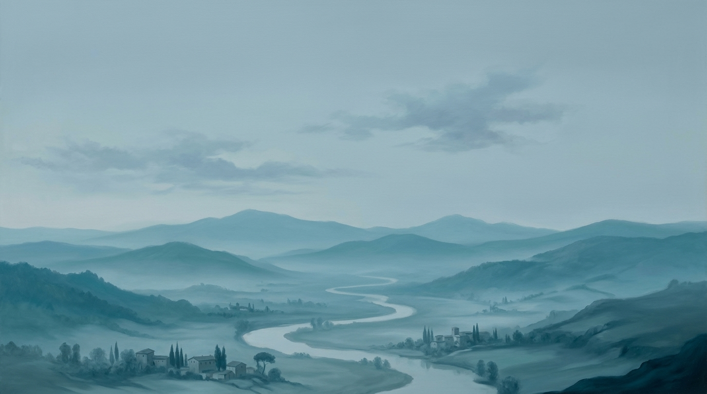
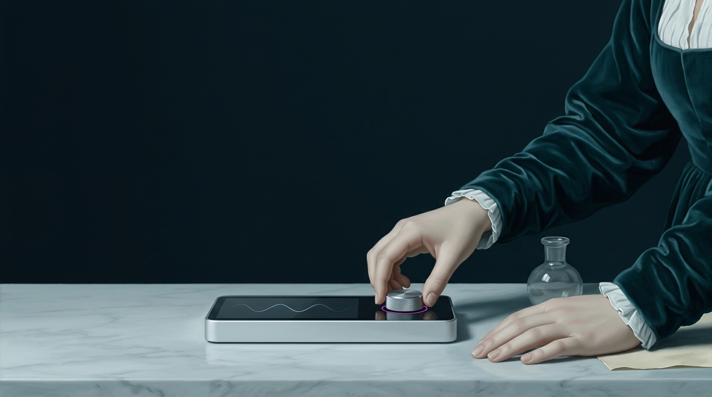

Gioconda
A living Renaissance study in five separated depth planes — where valley wind ripples her silk veil and her hand tunes the marble-seated console.
Autonomous acoustic loop & living study — sound and loggia cadence play automatically
Alive in stillness
Five decoupled planes, one shared breath
Instead of merging subject and architecture into one flat cutout, the Florentine stone colonnade sits independently at −75px behind Mona Lisa while the foreground archway frames her at +82px. Valley gusts travel sequentially across mist, cypress, her translucent silk veil, and her quiet, responsive expression.
Read stage blueprint
Harmony, choreographed
Colophon & Living Stage Record
Chapter XIV · 5-Plane Separation & Living Expression ProofHero · 5-Plane Loggia & Canvas 2D Character Rig
(L1 −260px) Distant overcast Tuscan valley & drifting cold mist; (L2 −165px) outdoor blue-teal cypress swaying behind the stone rail; (L3 −75px) independent Florentine stone loggia arch, twin columns, and balustrade cleanly separated behind the subject; (L4 0px) Canvas 2D articulated rig rendering Mona Lisa seated at pale grey marble—driving live eye gaze, organic blinks, subtle enigmatic smile morph, neck-pivoted head inclination, wind-rippled silk veil strips, elbow-pivoted forearm dial turns, and perspective-locked OLED oscilloscope; (L5a +42px) Da Vinci geometry & north-light motes; (L5b +82px) near-camera archway & curled parchment book.
Measured 5-Layer Composite · Shadow hue mean 192.9° (89.7% inside 180°–235°) · Zero video · Pure offline Canvas 2D + GSAP
Plate 02 · Hands & Signal (Coherent Desk Close-Up)
Intimate Renaissance still-life study anchored to the exact same anodized aluminum and smoked-glass console from the hero loggia. Smooth poreless porcelain hands emerge naturally from dark teal silk-velvet sleeves with pleated white linen cuffs, resting on pale cool marble as the right fingertips actively adjust the knurled dial beside a muted classical glass apothecary flask and parchment manuscript against a flat matte blue-black studio wall.
Measured Plate 02 · Shadow hue mean 198.7° (99.9% inside 180°–235°) · Shared overcast north light · Zero neon spill
0 · +42 / +82px
Head, hand & silk veil
Hand-to-OLED tuning
#dcded1 ground · #f7f7ee paper